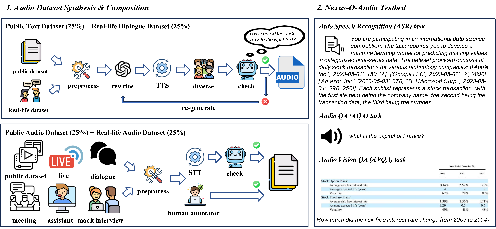
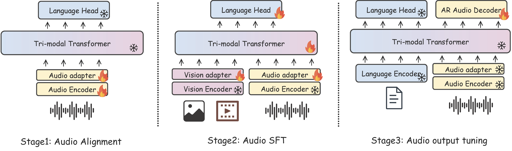
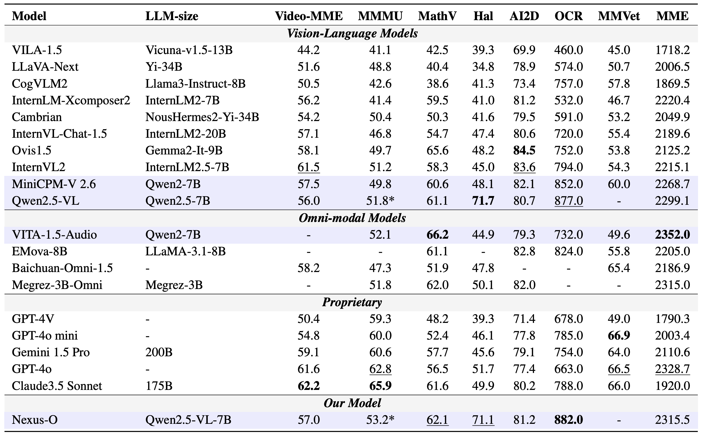
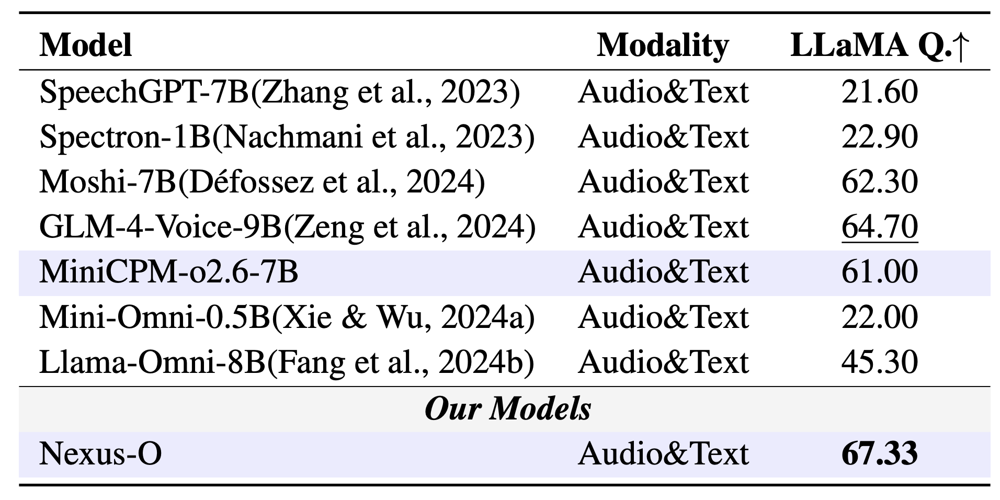
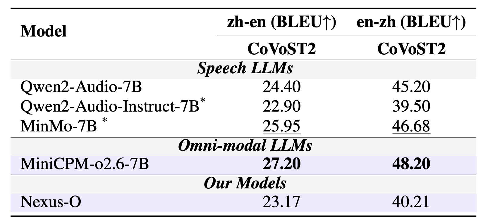

Nexus-O:
An Omni-Perceptive And -Interactive Model for Language, Audio, And Vision
Demo
Overview
Nexus-O, which supports any combination of audio, image/video, and text inputs. Different from existing approaches that treat audio as an auxiliary, our model enables a joint understanding of these modalities. Nexus-O is capable of handling a wide range of tasks, demonstrating strong performance across various benchmarks. For Nexus-O-audio (EN) and (CN), the scores are expressed as reciprocal (1/scores).
•Architecture of Nexus-O
Architecture of Nexus-O, which is designed to accept any combination of input modalities and generates output in either the language or audio modality, where the Auto-Regressive (AR) audio decoder takes a special start token embedding and the last language embedding as input to generate the hierarchical discrete audio codes in an auto-regressive manner. These codes are subsequently fed into a pretrained audio generator to produce the final audio output.
•Audio Dataset Synthesis Pipeline
Audio dataset synthesis pipeline. In the current version, our testbed only supports the ASR task. We will further incorporate various audio-modal tasks, including the AQA and AVQA tasks. Both are currently under development.
•Overview of Training Stage
Overview of the training stage in Nexus-O. The first stage aims to map the speech features into semantic space, the second stage aims to enable the audio instruction-following capability, and the last stage aims to enable speech generation capability.
Experimental Results
Evaluation on Vision Understanding Benchmarks.
Evaluation on Audio English QA Benchmarks.
Evaluation on ASR Benchmarks.

Evaluation on Speech-to-Text Translation Benchmarks.
Citation
@article{liu2025nexus,
title={Nexus-O: An Omni-Perceptive And-Interactive Model for Language, Audio, And Vision},
author={Liu, Che and Zhang, Yingji and Zhang, Dong and Zhang, Weijie and Gong, Chenggong and Li, Haohan and Lu, Yu and Zhou, Shilin and Lu, Yue and Gan, Ziliang and others},
journal={arXiv preprint arXiv:2503.01879},
year={2025}
}